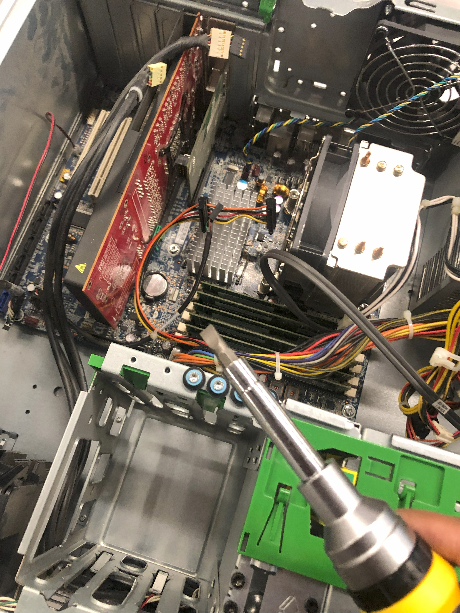

I alone and my partner has collaborated on various projects, from hardware, to coding, and to networking/security. Here are a few of them!
This is a short adventure game ran on a terminal-like interface. Written in Python, this adventure game takes you through Transylvania and other places throughout Romania and neighboring countries. This is a combination of exploring, historical conflicts, and common streotypes.
IMPORTANT: This game does not represent all people of a certain nationality or such, as shown throughout events in the game. No streotypes are to be used to one's advantage.
Lost in RomaniaThis is my first website I've created from scratch. Though really basic, it does have decent design and delves into each class in the classic first-person shooter game of Team Fortress 2.
TF2 ClassesMe and my partner built a PC from scratch, from the case, to the insides of the computer. Now, we couldn't just "build it". First, we have to exercise safety standards and understand what hardware component does what and where they sit before proceeding with the build. This was our first ever PC built by ourselves!
No, it is not the place in Lower Manhattan. It stands for "Small Office Home Office" network, which is a network system designed for small businesses and personal spaces like your home.
Down below is the link to the diagram with a key which depicts my SOHO network and how all of our devices are connected, with an easter egg alongside ;)
SOHO NetworkThis project shows a demonstration of how to secure a workspace, both physically and virtually. This shows how to keep the space and people private, safe, and secure from vulnarabilities. The link to the diagram with its key is down below.
University Campus Floor Plan